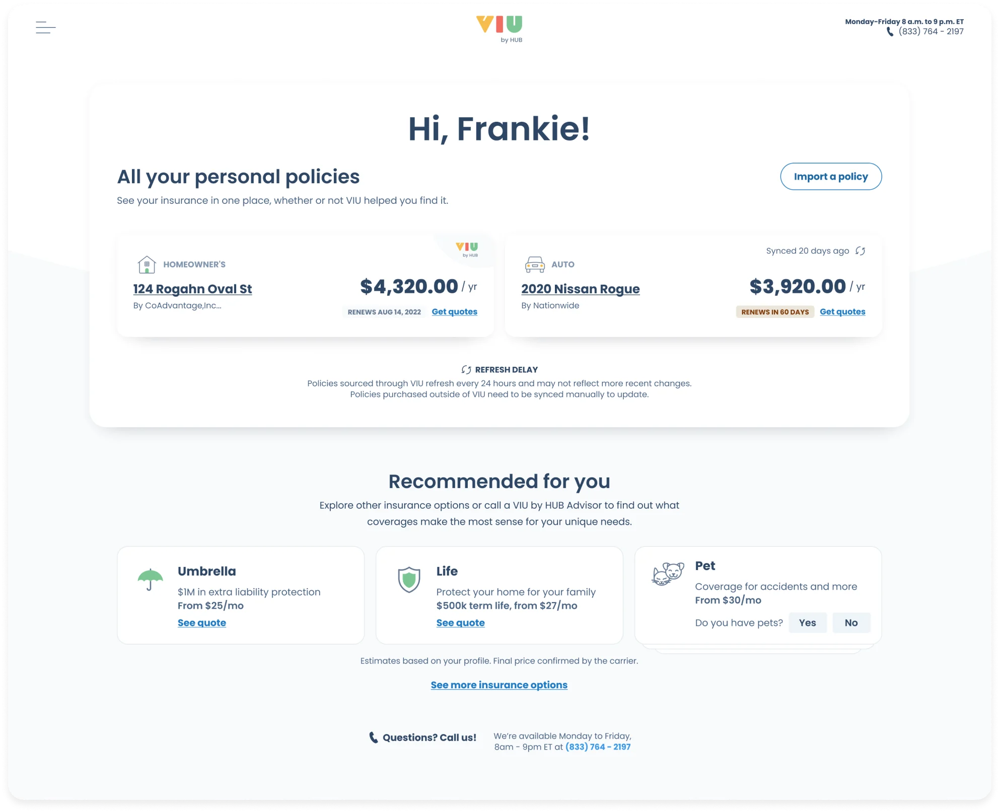

How Frankie found clarity, and a better way to renew.
Designing VIU’s account space, where every policy lives in one place and HUB can help before each renewal.
See case study

Experience
-
Oracle Feb 2025 - Sept 2026
Principal UX designer
Designed clinical ordering workflows for primary care and oncology, from lab requests to cancer regimens, to reduce clicks and build regulatory compliance into the design.
-
Distillery Jun 2021 - Dec 2024
Product designer
Designed policy and coverage experiences for an insurance platform to reduce agent service calls, while managing the Latin America design team for 2 years.
-
Thirty3 Jun 2020 - Jun 2021
Product designer
Designed SaaS products for early-stage startups, including a market research platform with data-dense results, to help clients get insights faster.
Designing clarity for high-stakes, data-dense software.
Most recently simplifying clinical workflows at Oracle Health.
With a background in graphic design and frontend, I take mission-critical workflows in healthcare, insurance and fintech and make them faster to use and harder to get wrong.